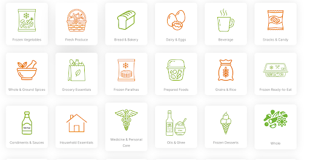
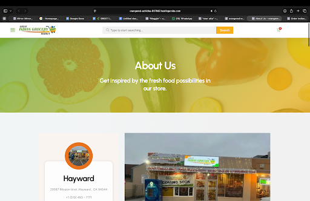
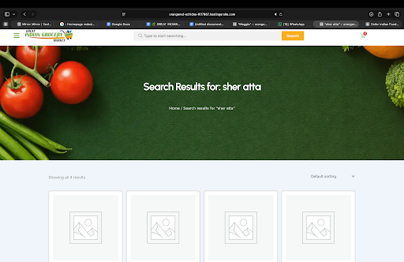
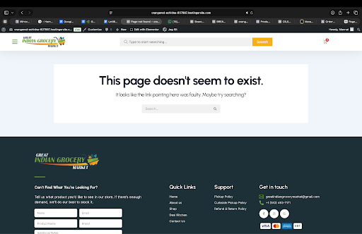
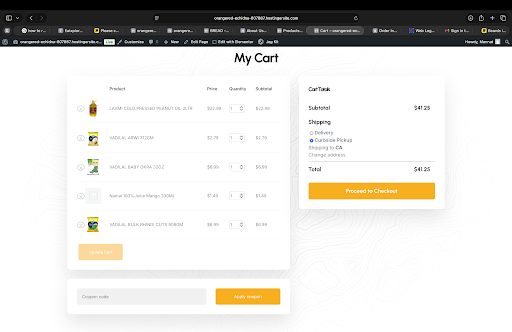

01
Research
- Mapped how the store sells: grocery first, then Desi Kitchen.
- Listed department overlaps and dead links in the live catalog.
- Captured search misspellings that returned empty results.
Building a clearer online store for a Hayward Indian grocery — so shoppers can find products across 2,500+ items without fighting the template.
The store started from a generic WooCommerce layout. It was not ready for a large grocery catalog with many departments, messy category names, fragile search, and broken paths into things like organic foods. Shoppers needed a storefront that felt like a real grocery — not a default theme with products dropped in.
I redesigned and set up the store end to end: clearer home order, a real department grid, stronger search, a full-bleed About page in the store’s green and saffron, top navigation, pickup-friendly checkout, and fixes from a live owner feedback round.
I led product and implementation: UX in Figma, WordPress and WooCommerce setup, category structure for 2,500+ products, search and navigation behavior, the About experience, and checkout polish. I also turned owner feedback into concrete site changes — including home order, department cleanup, continuous scroll, and pickup-friendly cart options.
We began with a stock theme. From there I rebuilt the structure around how people actually shop this store: grocery and convenience up front, Desi Kitchen after, and a department grid that covers frozen, produce, spices, dairy, snacks, household, and more.
Shop Now and Fast Pickup actions point into departments. Organic Foods became a real place to land. Featured content was tuned for weekly promotions and a Customer Favorites strip — so the home page sells the store, not the template defaults.

Grocery and Convenience come first on landing. Desi Kitchen follows. Navigation for Home, About Us, Shop, Desi Kitchen, and Contact sits up top between search and cart so people can move without hunting.

A clear Departments heading, an All Products entry, and icons for each aisle. Overlapping labels like separate “Whole” and “Whole & Ground Spices” groups were combined so the same spices are not split across two places.
Exact spelling used to be required — a near miss like “Sher Ata” for “Sher Atta,” or a common brand misspelling, returned nothing. Search was loosened so nearby spellings still surface the right products.

Some department links opened a “this page doesn’t seem to exist” screen — including Organic Foods. Those routes were fixed or created, and long lists scroll as one page instead of forced page-1 / page-2 / page-3 controls.

Cart totals were overlapping and hard to read. I cleaned the cart summary so price, shipping choice, and total sit clearly — including curbside pickup alongside delivery — on the path to checkout.

Organic Foods needed a real destination — not a promo tile that led nowhere — so staff can add and manage those products later.
A suggest-a-product path lets shoppers name what they want. Strong demand can guide what gets stocked next.
Copy and modules highlight wide selection, order-online pickup, and live support hours so expectations match the Hayward shop.
Phone and email stay visible. Hours stay consistent with the store: open seven days, with a clear window for questions.
Fast free store pickup is promoted on home. Cart supports curbside, with room to collect car details when that option is chosen.
All Products, merged spice groups, and continuous scroll keep browsing in one flow instead of jumping through numbered pages.
| Owner asked | What changed |
|---|---|
| Put Grocery and Convenience first on the home page; Desi Kitchen after. | Reordered home sections so grocery leads. |
| Add an All Products department and a clear Departments heading. | Added both to the department section. |
| Merge duplicate spice departments into one. | Combined overlapping “Whole” spice groups into a single department. |
| Search fails on small typos and common brand misspellings. | Loosened matching so near spellings still return products. |
| Use one continuous page instead of 1 / 2 / 3 paging controls. | Removed numbered page arrows; lists scroll in one flow. |
| Organic Foods opens a missing page. | Fixed the destination so Organic Foods lands on a real department. |
| Fast Pickup should jump to departments. | Linked Fast Pickup into the Departments section. |
| About Us should feel vibrant in white, saffron, and green, full screen, with logo and name centered. | Rebuilt About with brand colors, full-bleed hero, and store identity front and center. |
| Show main nav between search and cart. | Added Home, About Us, Shop, Desi Kitchen, and Contact in the header. |
| Cart total text overlaps. | Cleaned checkout/cart typography so totals read clearly. |
Home order, departments, search, About, and checkout all moved in response to concrete owner notes — not guesswork.
The live store runs on tools the owner can keep updating — products, promotions, and departments included.
Grocery-first browsing, Desi Kitchen as its own path, and pickup-minded messaging match the physical shop.
Structure and search were built with 2,500+ products in mind — categories that stay usable as inventory grows.
Shoppers can move from departments to cart with readable totals and pickup options that fit how people use this store.
A grocery template is only a starting point. The hard part is matching shelf logic — department names, search forgiveness, and pickup habits — to what the owner hears from customers every day. Short feedback rounds beat long speculation: each note mapped to a visible fix, from home order to checkout type. Brand color is not decoration here; green and saffron on About and search make the site feel like the same store people already trust in Hayward.